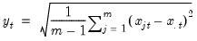
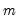
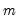
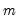

@rstdevs By-Row Statistics Row sample (d.f. corrected) standard deviations. Square roots of Pearson product moment sample variances for each row of the group, with d.f. correction. Syntax: @rstdevs(x) x: group Return: series For each observation corresponding to a row in the group of series, compute the sample standard deviation,  where is the mean of the  values for the observation. Equivalent to @rstdev. Examples show @rstdevs(g returns a linked series of sample standard deviations in the rows of group g. Cross-references See also @rstdev and @rstdevp.


 corresponding to a row in the group of
corresponding to a row in the group of  series, compute the sample standard deviation,
series, compute the sample standard deviation, is the mean of the  values
is the mean of the  values  for the observation.
for the observation.